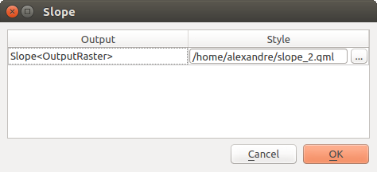

28.2. Processing Framework ကို ပြင်ဆင်သတ်မှတ်ခြင်း (Configuring the Processing Framework)
Processing Options menu ( tab) တွင် algorithm များ မည်သို့အလုပ်လုပ်ဆောင်မည်ကို ပြင်ဆင်သတ်မှတ်နိုင်ပါသည်။ ပြင်ဆင်သတ်မှတ်ခြင်းအတွက် parameter များကို dialog ၏ ဘယ်ဘက်တွင်ရွေးချယ်နိုင်သော သီးခြားခွဲထားသည့် block များတွင် တည်ဆောက်ထားပါသည်။
28.2.1. အထွေထွေ
General block တွင် algorithm dialog ၊ ထည့်သွင်းအသုံးပြုသောအချက်အလက် သို့မဟုတ် ရလာဒ် parameter များ မည်သို့လုပ်ဆောင်သင့်သည်ကို ထိန်းချုပ်ရန် မူရင်း setting များပါဝင်ပါသည်။ သို့သော် တချို့သော setting များကို algorithm run တစ်ခုချင်းစီ သို့မဟုတ် individual parameters (parameter တစ်ခုချင်းစီ) အတွက် algorithm level တွင် ပြင်ဆင်ရေးသားနိုင်ပါသည်။
ထွက်လာမည့် raster layer ၏ မူရင်း extension မှာ
tifဖြစ်ပါသည်။ထွက်လာမည့် vector layer ၏ မူရင်း extension မှာ
gpkgဖြစ်ပါသည်။Algorithm ကိုစေခိုင်းလုပ်ဆောင်သောအခါ ဆီလျော်မှုမရှိသော feature များကို ရွေးချယ်စစ်ထုတ်ခြင်း-
ရွေးချယ်စစ်ထုတ်မှု မလုပ်ခြင်း (ပိုမိုကောင်းမွန်သောလုပ်ဆောင်မှု) - Feature များအားလုံး (ဆီလျော်မှုရှိသော နှင့် ဆီလျော်မှုမရှိသော geometry များ) ကိုလုပ်ဆောင်ပါသည်၊ သို့သော် geometry ဆီလျော်မှုမရှိခြင်းသည် လုပ်ငန်းဆောင်တာများကို မည်သို့အကျိုးသက်ရောက်စေမည် ဆိုသည်ပေါ်မူတည်ပြီး ရလာဒ်များတွင် အမှားများပါဝင်နိုင်ပါသည်။
ဆီလျော်မှုမရှိသော geometry များပါဝင်သော feature များကို ကျော်ပစ်ခြင်း၊ dataset ၏အစုအဖွဲ့တစ်ခု (ဆီလျော်မှုရှိသော geometry feature များ) ကိုသာ လုပ်ဆောင်ပေးခြင်းကိုဆိုလိုပါသည်။
Geometry တစ်ခုသည် ဆီလျော်မှုမရှိသောအခါ algorithm စေခိုင်းလုပ်ဆောင်ခြင်းကို ရပ်တန့်ခြင်း - Layer တစ်ခုလုံးကို algorithm ကလုပ်ဆောင်စေလိုလျှင် ဆီလျော်မှုမရှိသော geometry များကိုရှာဖွေပြီး ပြင်ဆင်ရန်လိုအပ်ပါသည်။ အရည်အသွေးစစ်ဆေးခြင်း (Check validity) သို့မဟုတ် ဂျီဩမေတြီများကိုပြင်ခြင်း (Fix geometries) ကဲ့သို့ algorithm များကို အသုံးပြုပြီး ရှာဖွေပြင်ဆင်နိုင်ပါသည်။
ဆီလျော်မှုမရှိသော feature များကို ရွေးချယ်စစ်ထုတ်ခြင်း setting ကို algorithm လုပ်ဆောင်နေချိန်တွင် ထည့်သွင်းအသုံးပြုသော အချက်အလက်တစ်ခုချင်းစီပေါ်တွင် ပြင်ဆင်ရေးသားနိုင်ပါသည်။
Algorithm လုပ်ဆောင်ပြီးနောက် dialog ကိုဆက်ဖွင့်ထားခြင်း - Algorithm ကိုစေခိုင်းလုပ်ဆောင်ခြင်း ပြီးဆုံးသွားပြီး ရလာဒ် layer များကို QGIS ထဲသို့ခေါ်ယူထည့်သွင်းလိုက်သည်နှင့် algorithm dialog သည် ပိတ်သွားမည်ဖြစ်ပါသည်။ ၎င်းကိုဆက်ဖွင့်ထားစေလိုလျှင် (algorithm ကို မတူသောအခြား parameter များဖြင့် ထပ်မံလုပ်ဆောင်ရန် သို့မဟုတ် log tab တွင်ရေးသားထားသော ထွက်လာသည့်ရလာဒ်ကို ပိုကောင်းအောင် စစ်ဆေးရန်) ဤ option ကို အမှန်ခြစ်ခြစ်ပါ။
Max Threads (အများဆုံး Threads)
ယာယီမဟုတ်သော ရလာဒ်များအတွက် Output folder - Processing မှရရှိလာမည့် ရလာဒ်များကိုသိမ်းဆည်းရန်နေရာ (folder) လမ်းကြောင်း ကိုသတ်မှတ်ပေးမထားလျှင် ယခု folder ထဲတွင် ၎င်းတို့ကို သိမ်းဆည်းပေးပါမည်။ မူရင်းနေရာမှာ လက်ရှိအသုံးပြုနေသည့် user profile အောက်ရှိ
processing/outputsဖြစ်ပါသည်။Override temporary output folder path (ယာယီရလာဒ်များ foler လမ်းကြောင်းကိုပြင်ဆင်ရေးသားခြင်း) - ပုံမှန်အားဖြင့် ယာယီရလာဒ်များကို ကွန်ပျူတာထဲရှိ
tmpfolder ထဲတွင် သိမ်းဆည်းပါသည်။ ယခုနည်းလမ်းကိုအသုံးပြုခြင်းဖြင့် အခြားနေရာတွင်သိမ်းဆည်းနိုင်ပါသည်။Pre-execution script (စေခိုင်းလုပ်ဆောင်ခြင်းမတိုင်မီ Script) and Post-execution script (စေခိုင်းလုပ်ဆောင်ခြင်းအပြီး Script)။ ၎င်း parameter များသည် processing scripting လုပ်ဆောင်ချက် (functionality) များကို အသုံးပြု၍ရေးထားသော script များပါဝင်သည့် file များသို့ ညွှန်ပြပေးပါသည်။ ထို processing scripting functionality များသည် scripting နှင့် console အကြောင်းပါဝင်သောကဏ္ဍတွင် ရှင်းပြထားသည့်အတိုင်းဖြစ်သည်။
Prefer output filename for layer names (layer အမည်များအတွက် ရလာဒ် file နာမည်ကို ဦးစားပေးခြင်း)။ Algorithm မှဖန်တီးပေးသော ရလာဒ် layer တစ်ခုချင်းစီ၏ နာမည်ကို algorithm မှပင် ကိုယ်တိုင်အမည်ပေးပါသည်။ အချို့သောကိစ္စများတွင် မည်သည့် ထည့်သွင်း layer ပဲအသုံးပြုသည်ဖြစ်စေ တူညီသောရလာဒ်အမည်ကို တသတ်မတည်း အသုံးပြုတတ်ပါသည်။ အခြားကိစ္စရပ်များတွင် ထည့်သွင်းအသုံးပြုသော layer ၏အမည် သို့မဟုတ် algorithm ကို လုပ်ဆောင်ရန် အသုံးပြုသော parameter အချို့ပေါ်ကို မူတည်ပြီး အမည်ပေးပါသည်။ ဤ checkbox ကိုအမှန်ခြစ် ခြစ်ထားလျှင် ရလာဒ် file မှ အမည်ကိုယူပြီးအသုံးပြုပါသည်။ ရလာဒ် file ကို ယာယီ file အဖြစ်သိမ်းဆည်းလျှင် ရှိနေပြီးသား အခြားသော file နာမည်များနှင့် မတူစေရန် ရှည်လျားပြီးအဓိပ္ပါယ်မရှိသောအမည်ကို အသုံးပြုတတ်ပါသည်။
Results group name (ရလာဒ်များ၏ အုပ်စုအမည်)။ Layers panel ထဲရှိ အုပ်စုတစ်ခုထဲတွင် processing ရလာဒ် layer များအားလုံးကို ပါဝင်စေလိုလျှင် ၎င်း parameter အတွက် အုပ်စုနာမည်တစ်ခုကို သတ်မှတ်ပေးပါ။ အုပ်စုက ရှိပြီးသားလည်းဖြစ်နိုင်သလို မရှိသေးတာလည်း ဖြစ်နိုင်ပါသည်။ QGIS သည် ရလာဒ် layer များအားလုံးကို ထိုအုပ်စုထဲသို့ ထည့်ပေးပါသည်။ ပုံမှန်အားဖြင့် ၎င်း parameter သည် ဘာမှမရှိဖြစ်နေတတ်ပြီး algorithm တစ်ခုကို လုပ်ဆောင်သောအခါ အသုံးပြုသော item ပေါ်မူတည်ပြီး ရလာဒ် layer များအားလုံးကို Layers panel ထဲရှိ နေရာအမျိုးမျိုးသို့ ပေါင်းထည့်ပေးပါသည်။ Algorithm dialog ထဲရှိ Open output file after running algorithm ကို အမှန်ခြစ်ခြစ်ထားမှသာလျှင် ရလာဒ် layer များကို Layers panel ထဲသို့ ထည့်သွင်းမည်ဖြစ်သည်။
Show algorithms with known issues (ပြဿနာများရှိနေသော algorithm များကိုဖော်ပြခြင်း) - ပုံမှန်အားဖြင့် QGIS သည် ပျက်စီးနေသော alogrithm များကို ပြသခြင်းမပြုပါ (များသောအားဖြင့် third-pary provider များမှ ဖြစ်တတ်ပါသည်)။ ဤ tool ကိုအမှန်ခြစ် ခြစ်ထားလျှင် ပြဿနာရှိနေသော algorithm များကို Processing toolbox ထဲတွင် သတိပေးသင်္ကေတတစ်ခုဖြင့် မည်သည့်ပြဿနာများ ရှိနေသည်ကို ဖော်ပြပေးပါသည်။ မိမိကြုံတွေ့ရသော ပြဿနာများအတွက် အသုံးပြုနိုင်ပါသည်။
Show feature count for output vector layers (ရလာဒ် vector layer များအတွက် feature အရေအတွက်ကိုပြသခြင်း)။ အချို့သော data format များအတွက် feature အရေအတွက်ကို တွက်ချက်ခြင်းသည် အချိန်များစွာကြာတတ်သောကြောင့် ဤ tool ကို ပုံမှန်အားဖြင့် ပိတ်ထားပါသည်။
Layer CRS သတ်မှတ်ချက်ကို ရွေးချယ်ထားသော box များထဲတွင် ပြသခြင်း
အသုံးပြုလို့မရသော provider များရှိသောအခါ သတိပေးစာသားတစ်ခုခုဖြင့် ပြသခြင်း
Line layer များအတွက် style၊ Point layer များအတွက် style၊ Polygon layer များအတွက် style နှင့် Raster layer များအတွက် style ကို ရလာဒ် layer များအတွက် ပုံမှန် ပုံဖော်ပြသခြင်း setting အတွက် အသုံးပြုပါသည် (Processing algorithm များမှ ဖန်တီးထားသော layer များ)။ QGIS ကိုအသုံးပြုပြီး အသုံးပြုလိုသော style ကိုဖန်တီးပြီး file တစ်ခုအဖြစ်သိမ်းထားပါ။ ထို့နောက် algorithm များမှ အသုံးပြုနိုင်စေရန် setting များထဲတွင် ထို file ကိုသိမ်းထားသောနေရာကိုညွှန်းပေးပါ။ Processing ဖြင့် layer တစ်ခုကိုခေါ်ယူပြီး QGIS canvas တွင်ထည့်သွင်းအသုံးပြုသောအခါ ၎င်း style ကိုအသုံးပြုပြီး ပုံဖော်ပြသမည်ဖြစ်ပါသည်။
Algorithm တစ်ခုချင်းစီနှင့် ၎င်း၏ထွက်လာသော ရလာဒ်များထဲမှ တစ်ခုချင်းစီအတွက် ပုံဖော်ပြသခြင်း style များကို ပြင်ဆင်နိုင်ပါသည်။ Toolbox ထဲရှိ algorithm အမည်ပေါ်တွင် right-click နှိပ်ပြီး Edit rendering styles for outputs (ရလာဒ်များအတွက် ပုံဖော်ပြသခြင်း style များကို ပြင်ဆင်ခြင်း) ကိုရွေးချယ်ပါ။ အောက်တွင်ဖော်ပြထားသော dialog ပုံစံမျိုး တစ်ခုပွင့်လာပါလိမ့်မည်။
 Fig. 28.5 ပုံဖော်ပြသခြင်း style များ
ထွက်လာသော ရလာဒ်တစ်ခုချင်းစီအတွက်အသုံးပြုလိုသော style file (
.qml) ကိုရွေးချယ်ပြီး OK ကိုနှိပ်ပါ။Warn before executing if parameter CRS’s do not match (parameter CRS’s များမကိုက်ညီလျှင် စေခိုင်းလုပ်ဆောင်ခြင်းမတိုင်မီ သတိပေးပါ) - ပုံမှန်အားဖြင့် QGIS မူရင်း algorithm များ (
 group အောက်တွင် စာရင်းပြုစုထားသော algorithm များကိုဆိုလိုသည်) သည် စေခိုင်းလုပ်ဆောင်ခြင်း မတိုင်မီ ထည့်သွင်းအသုံးပြုသော layer များကို ပထမဆုံးတစ်ခု၏ CRS နှင့် projection တူအောင် ပြုလုပ်ပေးပါသည်။ ထည့်သွင်းအသုံးပြုသော CRS မတူသောအခါ reprojection လုပ်ဆောင်မပေးသော အခြား tool များဆီမှ သတိပေးမှု တက်လာစေရန် ဤ option ကို အမှန်ခြစ်ခြစ်ပါ။ Third-party provider များမပါဝင်ပါ။
group အောက်တွင် စာရင်းပြုစုထားသော algorithm များကိုဆိုလိုသည်) သည် စေခိုင်းလုပ်ဆောင်ခြင်း မတိုင်မီ ထည့်သွင်းအသုံးပြုသော layer များကို ပထမဆုံးတစ်ခု၏ CRS နှင့် projection တူအောင် ပြုလုပ်ပေးပါသည်။ ထည့်သွင်းအသုံးပြုသော CRS မတူသောအခါ reprojection လုပ်ဆောင်မပေးသော အခြား tool များဆီမှ သတိပေးမှု တက်လာစေရန် ဤ option ကို အမှန်ခြစ်ခြစ်ပါ။ Third-party provider များမပါဝင်ပါ။
28.2.2. Menus
Menus block သည် algorithm ၊ script သို့မဟုတ် model (မူရင်းအတိုင်းပါသော သို့မဟုတ် plugin များဖြင့်ထည့်ထားသော) များကို ၎င်းတို့အတွက်သီးသန့်အသုံးပြုထားသော menu သို့မဟုတ် toolbar (processing toolbox နှင့်အတူ) မှတဆင့် အသုံးပြုနိုင်ရန် လုပ်သင့်/မလုပ်သင့်ကို ထိန်းချုပ်ပေးပါသည်။ Provider တစ်ခုချင်းစီ၏ item တစ်ခုချင်းစီအတွက် အောက်ပါတို့ကိုလုပ်ဆောင်နိုင်ပါသည် -
Add button in toolbar (Toolbar ထဲတွင် ခလုတ်ထည့်သွင်းခြင်း) သည် Processing Algorithms toolbar ထဲတွင် ခလုတ်ကို အသုံးပြုနိုင်စေပါသည်။
Algorithm ကို Icon တစ်ခုသတ်မှတ်ပေးခြင်း။
Menu path တစ်ခုသတ်မှတ်ပေးခြင်း - ရှိပြီးသား သို့မဟုတ် ကိုယ်တိုင်ဖန်တီးထားသော menu မှတဆင့် algorithm ကိုအသုံးပြုနိုင်မည်ဖြစ်သည်။ ဥပမာ-
Vect&or/MyTopAlgorithms။
ပြောင်းလဲထားသော setting များကိုအသက်ဝင်စေရန် QGIS ကို ပိတ်ပြီး ပြန်ဖွင့်ပါ။ ပြောင်းလဲခဲ့သောအရာများကို Reset to defaults (မူရင်းအတိုင်းပြန်ထားခြင်း) အချိန်မရွေး မူရင်းအတိုင်းပြန်ပြောင်းနိုင်ပါသည်။
28.2.3. Model များ Script များ (Models and Scripts)
 Models နှင့်
Models နှင့်  Scripts block များထဲတွင် သိမ်းဆည်းရန် default folder တစ်ခုကိုသတ်မှတ်ပေးနိုင်ပြီး model များနှင့် script များကို သက်ဆိုင်ရာတွင် သွားရောက်ရှာဖွေနိုင်ပါသည်။
Scripts block များထဲတွင် သိမ်းဆည်းရန် default folder တစ်ခုကိုသတ်မှတ်ပေးနိုင်ပြီး model များနှင့် script များကို သက်ဆိုင်ရာတွင် သွားရောက်ရှာဖွေနိုင်ပါသည်။
28.2.4. ပံ့ပိုးထောက်ပံ့ပေးသူများ (Providers)
Algorithm  Provider များအတွက်လည်း block တစ်ခုရှိပါသည်။ ထည့်သွင်းထားသော Provider များမှ ၎င်းတို့၏ setting များကို ဖော်ပြသောနေရာဖြစ်ပါသည်။ ဥပမာ- မူရင်းအတိုင်းပါသော provider များသည် ၎င်းတို့၏ algorithm များကို toolbox တွင် ပေါ်/မပေါ် ဆိုသည်ကို ဆုံးဖြတ်ပေးသော Activate item တစ်ခုပါဝင်ပါသည်။ အချို့သော algorithm provider များသည် သီးခြား algorithm provider များကို ခြုံငုံမိသောအခါ ရှင်းပြပေးမည့် ကိုယ်ပိုင် ပြင်ဆင်သတ်မှတ်ခြင်း item များပါရှိပါသည်။
Provider များအတွက်လည်း block တစ်ခုရှိပါသည်။ ထည့်သွင်းထားသော Provider များမှ ၎င်းတို့၏ setting များကို ဖော်ပြသောနေရာဖြစ်ပါသည်။ ဥပမာ- မူရင်းအတိုင်းပါသော provider များသည် ၎င်းတို့၏ algorithm များကို toolbox တွင် ပေါ်/မပေါ် ဆိုသည်ကို ဆုံးဖြတ်ပေးသော Activate item တစ်ခုပါဝင်ပါသည်။ အချို့သော algorithm provider များသည် သီးခြား algorithm provider များကို ခြုံငုံမိသောအခါ ရှင်းပြပေးမည့် ကိုယ်ပိုင် ပြင်ဆင်သတ်မှတ်ခြင်း item များပါရှိပါသည်။